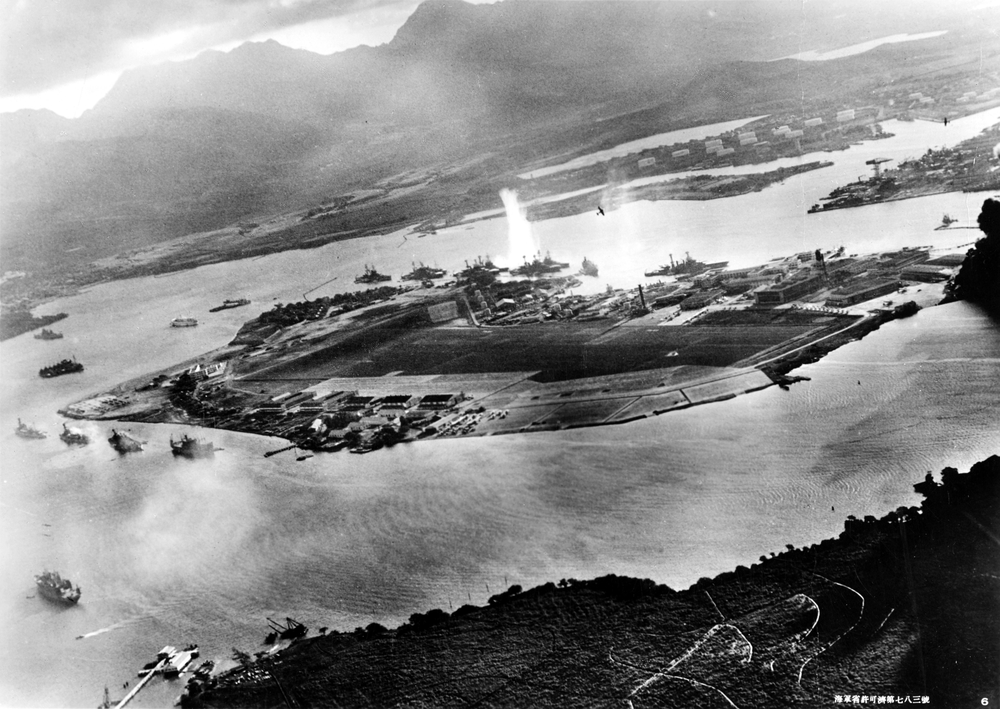

El Ataque a Pearl Harbor
El 7 de diciembre de 1941, a las 7:48 a.m. hora local, la base naval de Pearl Harbor, en Hawái, fue objeto de un ataque sorpresa y devastador por parte de la Armada Imperial Japonesa. Este evento marcó la entrada de Estados Unidos en la Segunda Guerra Mundial.
Contexto y Planificación
Japón, que ya estaba en guerra con China y buscaba expandir su influencia en el Pacífico, veía a la flota estadounidense en Pearl Harbor como una amenaza directa a sus ambiciones. El almirante Isoroku Yamamoto fue el principal arquitecto del plan, que buscaba neutralizar la flota del Pacífico de EE. UU. el tiempo suficiente para que Japón consolidara sus conquistas en el Sudeste Asiático. El ataque se planeó en secreto y se llevó a cabo sin una declaración de guerra previa.
El Ataque
El ataque se ejecutó en dos oleadas. La primera oleada, compuesta por torpederos, bombarderos y cazas, se centró en los acorazados amarrados en "Battleship Row" y en los aeródromos cercanos. La sorpresa fue casi total; muchos aviones estadounidenses fueron destruidos en tierra antes de que pudieran despegar. Pilotos como George Welch y Kenneth Taylor lograron reaccionar y derribar algunos aviones enemigos, pero la resistencia fue limitada.
La segunda oleada se enfocó en destruir la infraestructura de la base, incluyendo muelles secos, depósitos de combustible y otras instalaciones. Sin embargo, por razones que aún se debaten, los depósitos de combustible clave y el astillero no fueron completamente destruidos, un error crítico para Japón.
Consecuencias Inmediatas
El ataque duró menos de dos horas, pero el daño fue inmenso. Ocho acorazados estadounidenses fueron dañados, y cuatro de ellos hundidos (el USS Arizona nunca fue reflotado y sigue siendo un memorial). Más de 2.400 estadounidenses perdieron la vida y cerca de 1.000 resultaron heridos. La audaz respuesta de individuos como Dorie Miller, que operó una ametralladora antiaérea a pesar de su rol de cocinero, se convirtió en un símbolo de heroísmo.
Al día siguiente, 8 de diciembre de 1941, el presidente Franklin D. Roosevelt declaró el 7 de diciembre como "una fecha que vivirá en la infamia", y Estados Unidos declaró la guerra a Japón, entrando así de lleno en la Segunda Guerra Mundial.
El ataque a Pearl Harbor no solo fue un desastre militar, sino también un catalizador que unificó a la nación estadounidense y la lanzó a un conflicto global que transformaría el curso de la historia.